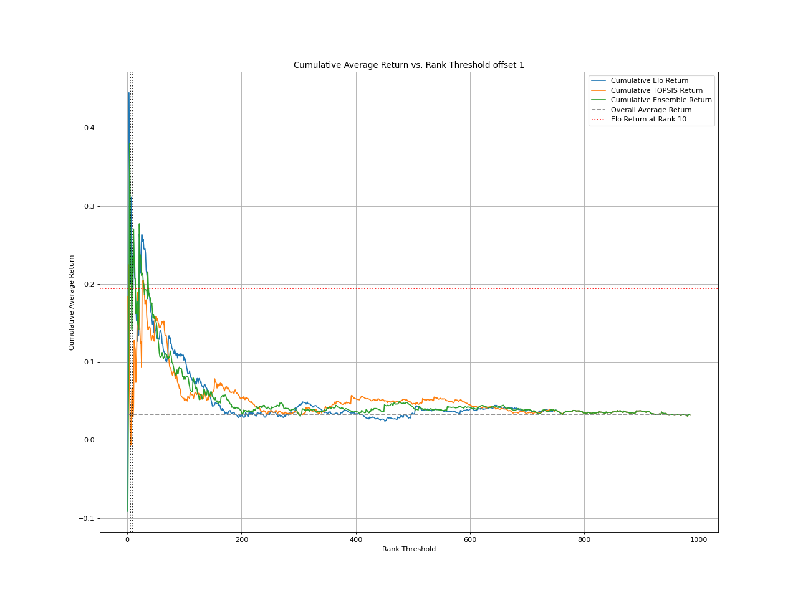
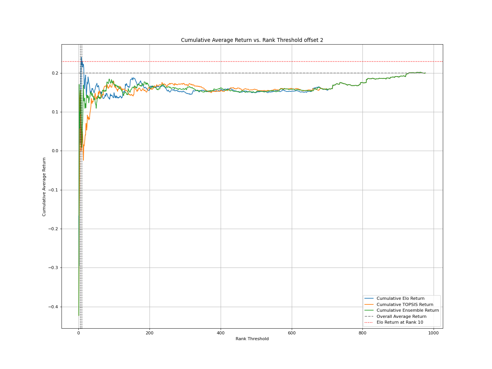
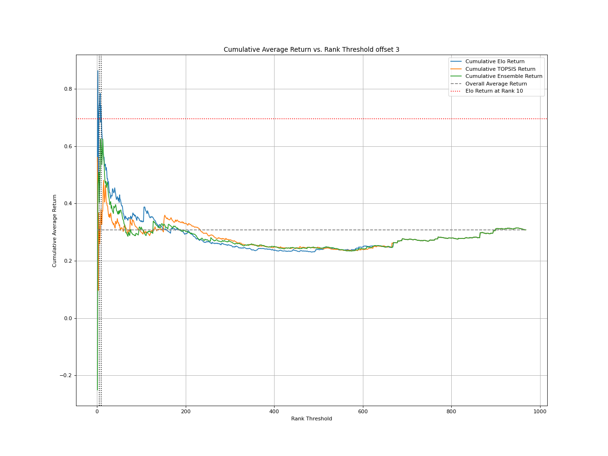
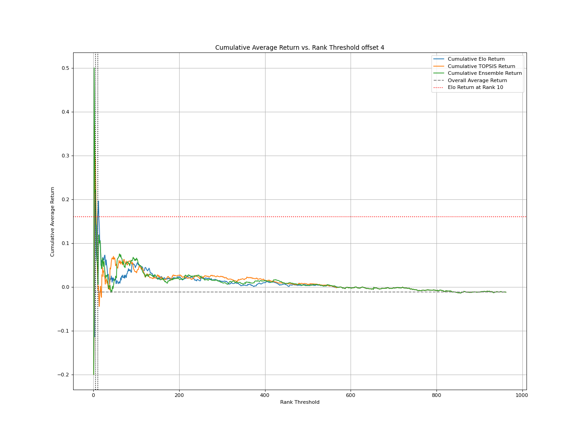
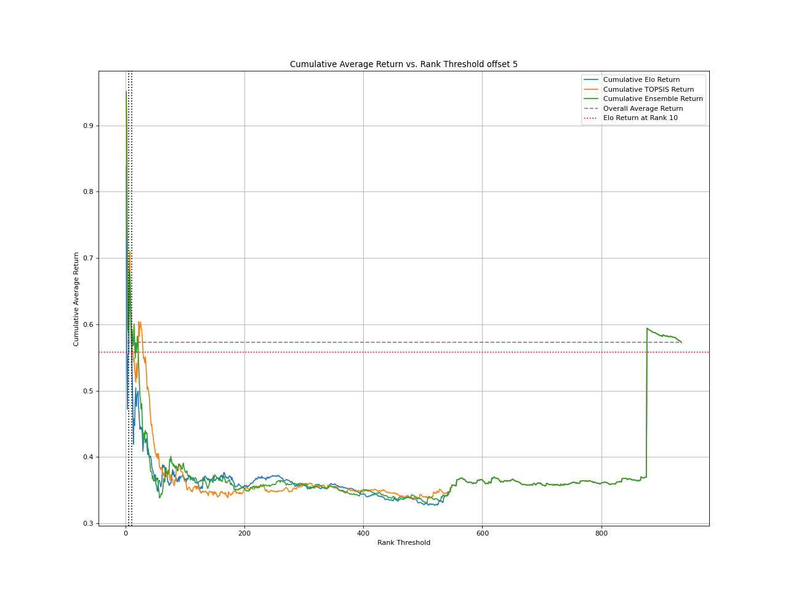
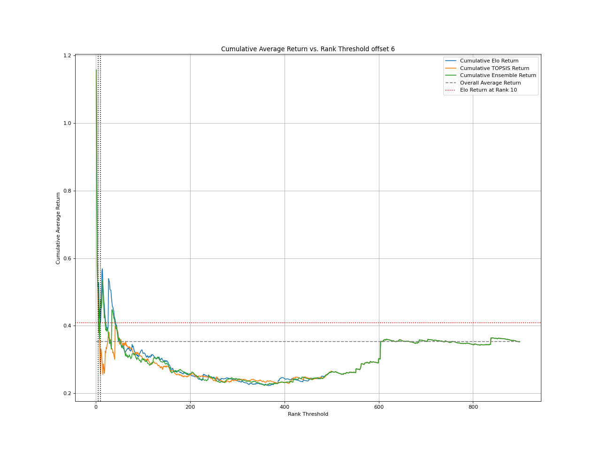
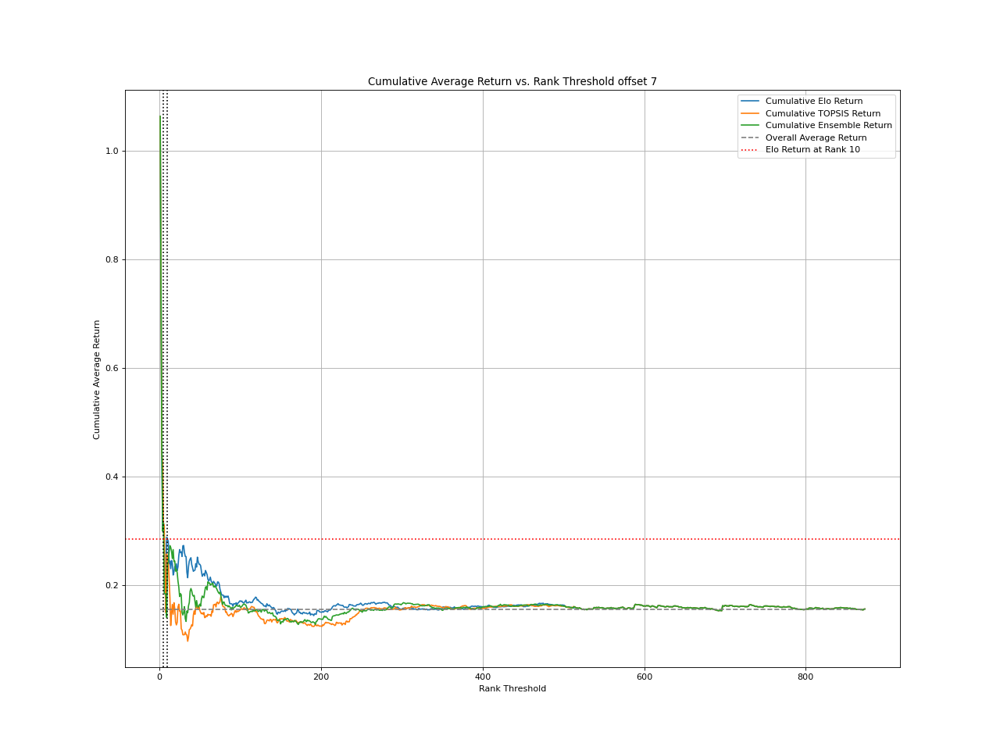
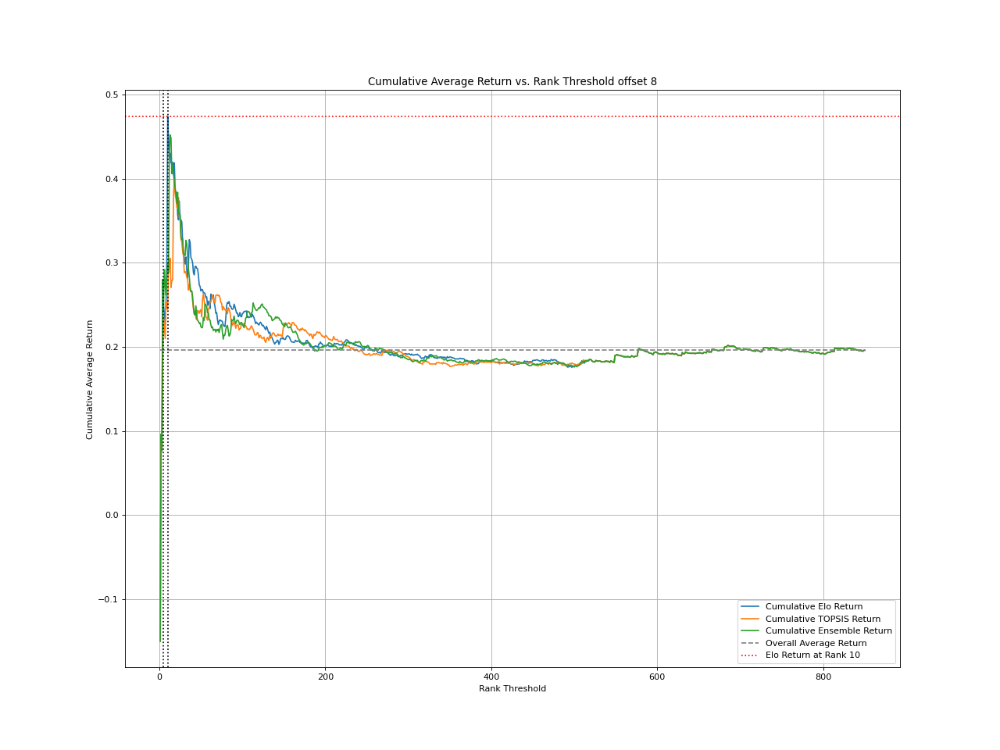

ELO Rating Strategy Returns Backtest
Strategy evidence is kept separate from the daily portfolio workflow, so the homepage stays focused on current target allocations.
Backtest Result by Rebalance Offset

How to read this
What this shows
Cumulative return across staggered start dates by investing in companies with different rank thresholds.
How to read
Look for curves that remain above baseline across offsets, not one isolated strong run.
Why it matters
Robust rankings should work across multiple rebalance calendars, not only one lucky start date.
Caveats
Trading costs/slippage depend on the backtest setup.






